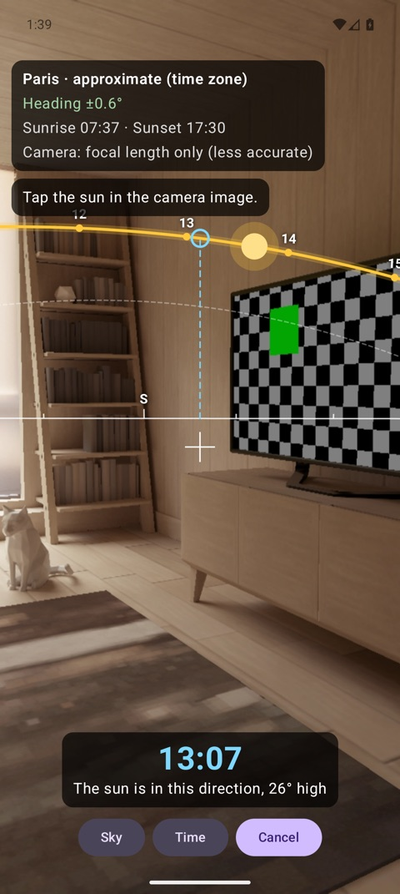
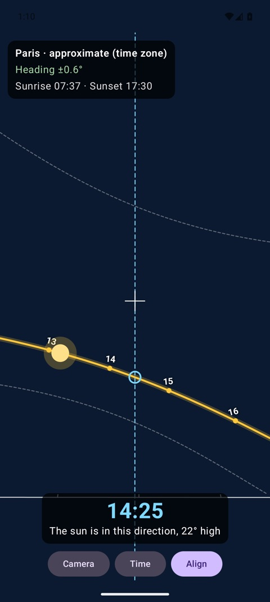
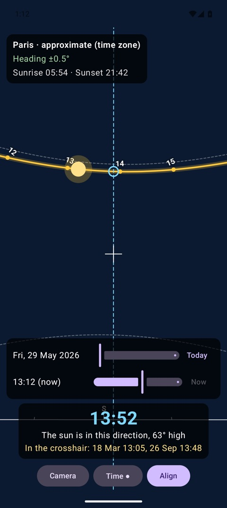

Made for the moment you visit a flat
When is the sun in this direction?
A vertical line through the crosshair meets the path of the sun. The large time is when the sun is in that direction, with its height above the horizon.
On which days?
Each point of the sky between the winter and the summer path gets the sun on about two days per year. Sunradar lists them for the point in the crosshair.
Any date and time
Slide through the year to see the path in June and in December, with sunrise, sunset, and the hours.
A compass you can trust indoors
Steel in buildings disturbs a phone compass. Sunradar notices it and relies on the gyroscope instead, and you can align the heading with the sun, the moon, or a landmark.
Precise where it matters
The astronomy is the easy part: the position of the sun agrees with NASA's JPL Horizons to better than 0.02° – a few seconds of time. The real limits are the compass of the phone and the camera. So Sunradar uses the lens calibration of the camera, the World Magnetic Model for the magnetic declination, and a filter that combines the gyroscope, the magnetometer, and your alignments. The app shows how accurate the heading is at any moment.
| Sun position | ≤ 0.015° (NOAA model), ≤ 0.002° (Astronomy Engine) |
|---|---|
| Moon position | ≤ 0.002° |
| Magnetic declination | WMM2025, exact to the official test values |
| Heading after alignment with the sun | limited by the tap on the sun (about 0.5°); field tests are in progress |
Everywhere
Android
The native app with the camera overlay, the heading filter, and sun detection.
Browser
The web app works offline after the first visit. On a computer, drag to look around.
iOS
The native app in SwiftUI, with the same features as the Android app. Build it from the repository; it is not in the App Store yet.
For developers
The core is a small C++ library with packages for Python, npm (WebAssembly), Android, and Swift. It is open source under the MPL-2.0.